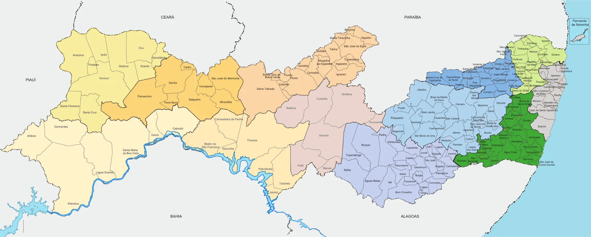

Carregando mapa interativo...
Zoom ultra fluido • 184 municípios • 469 promotoriasSelecione um município
Passe o mouse sobre um município no mapa para ver as informações das promotorias.
🔍 ZOOM ULTRA FLUIDO!
• Scroll do mouse: Zoom suave e fluido
• Arrastar: Mover o mapa
• Botões +/-: Zoom controlado
• Botão ⌂: Reset zoom
• ● Verde: Municípios com promotorias
• ● Laranja: Termos de outras promotorias
• ● Vermelho: Município selecionado
• 184 municípios • 469 promotorias
• Scroll do mouse: Zoom suave e fluido
• Arrastar: Mover o mapa
• Botões +/-: Zoom controlado
• Botão ⌂: Reset zoom
• ● Verde: Municípios com promotorias
• ● Laranja: Termos de outras promotorias
• ● Vermelho: Município selecionado
• 184 municípios • 469 promotorias